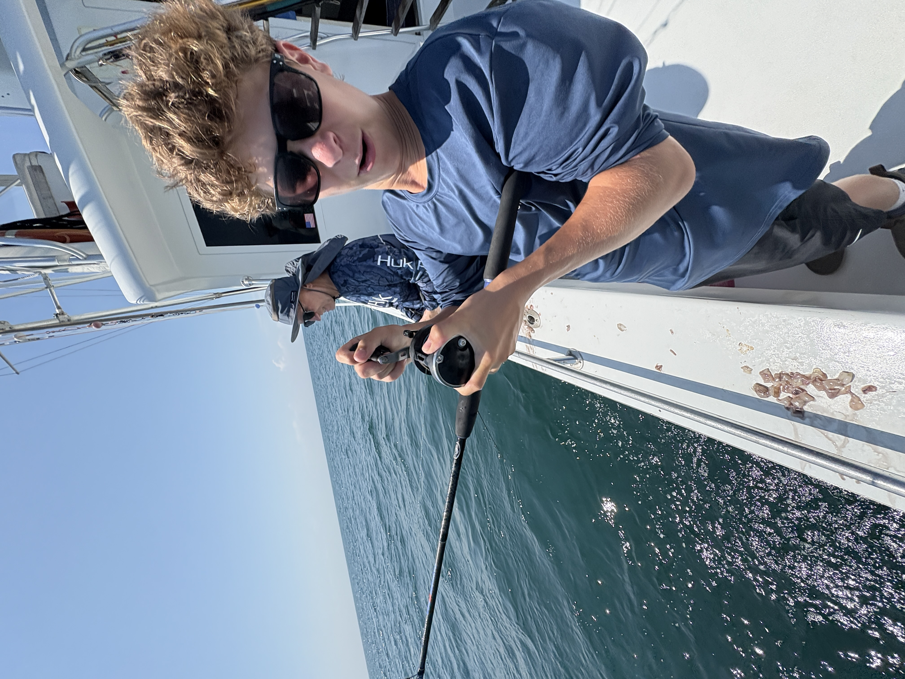
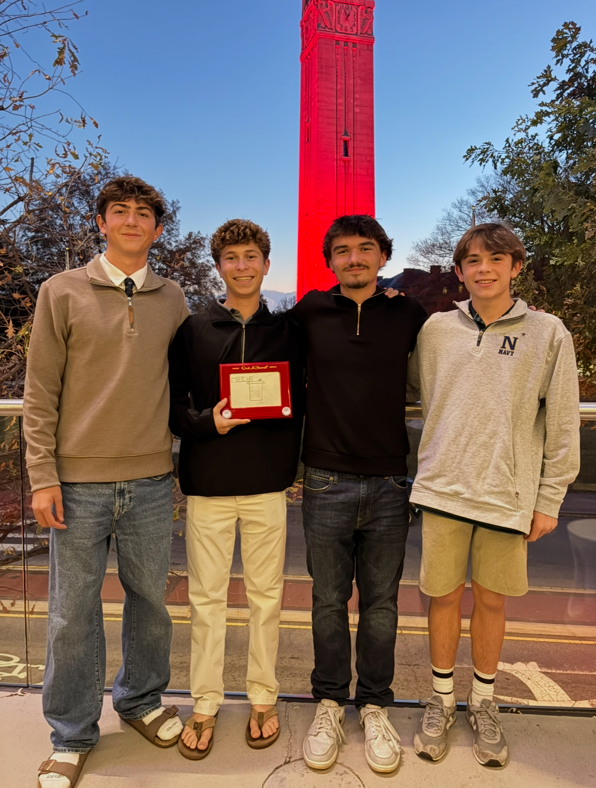

My Approach
Every project is built with a focus on simplicity, performance, and design. I aim to create websites that are easy for users to interact with while still maintaining a professional and modern appearance.
Why Work With Me
I provide consistent updates throughout the project and keep communication clear from start to finish. My goal is to make the process straightforward while delivering a final product that meets expectations.
What Sets Me Apart
Unlike template-based builders, each website is developed with custom code using HTML, JavaScript, and additional tools. This allows for more flexibility, better performance, and a more unique final product.
About the Developer
Hi, I’m Jude Sydell, the 16 year old developer behind Sydell Designs. I have a strong passion for web development and design. I enjoy creating sleak and well developed sites that focus on the user experience and interaction. I owe all of my knowledge to the 2 years of computer science courses I have taken in highschool so far. I hope to continue learning and creating as I improve my skills over the next few years.
My goal is to make every site I build fulfill a purpose and are each unique to anything that has been developed before. I focus on design, usability, and performance to make sure every project is visually strong, easy to navigate, and tailored to the needs of the client. Each website is taken on with attention to detail and built to create a professional level final result.

